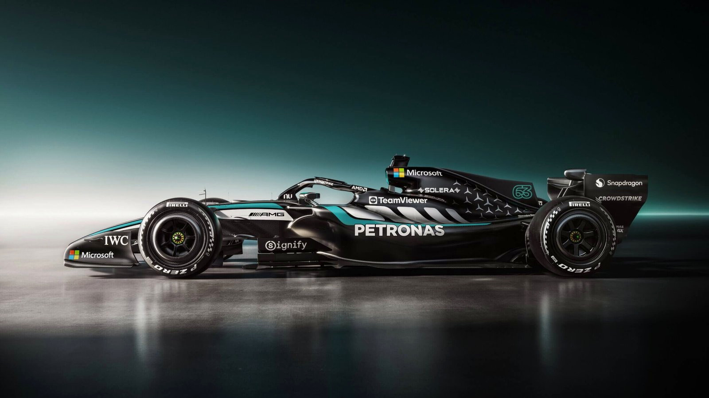

Mercedes-AMG Petronas
W17
Precision in black
and teal.
W17 E PERFORMANCE 被称为 F1 历史上最大的技术革命之一——底盘、动力单元、空气动力学与燃料规则全面重置。 由 George Russell 与 Kimi Antonelli 驾驶，前 5 站即斩获 5 胜 7 领奖台 5 杆位，是 2026 赛季开局最具统治力的赛车。
动力单元与性能
引擎 EngineMercedes-AMG M17 E PERFORMANCE — 1.6L V6 Turbo
综合功率 Total Power~750 kW / ~1,020 PS
MGU-K 功率350 kW（MGU-H 已取消）
电池系统 Battery锂离子电池 / 4.0 MJ 可用能量 / 每圈回收 9.0 MJ
最高转速 Max RPMICE 15,000 rpm / 涡轮 150,000 rpm
燃油 FuelPETRONAS Primax 高级可持续燃料
底盘与车身
底盘 Chassis模压碳纤维蜂窝复合材料单体壳
最低车重 Min Weight772 kg（含车手、冷却液、机油）
轴距 Wheelbase~3,400 mm（−200 mm）
车宽 / 车高1,900 mm / 950–970 mm
悬挂 Suspension前推杆 / 后推杆（碳纤维叉臂）
制动 BrakesCarbone Industries 碳/碳碟 / Brembo 卡钳 / 后制动线控
技术与运营
变速箱 Gearbox8 速 + 1 倒挡 / 碳纤维主壳体 / 液压序列式
轮毂 WheelsOZ 锻造镁合金 18 寸
润滑油 LubricantsPETRONAS Tutela / PETRONAS Syntium
车手 DriversGeorge Russell / Kimi Antonelli（新秀首胜中国GP）
技术总监 Tech DirectorJames Allison
赛季成绩 Results5 胜 / 7 领奖台 / 5 杆位 / 3 最快圈（前5站）